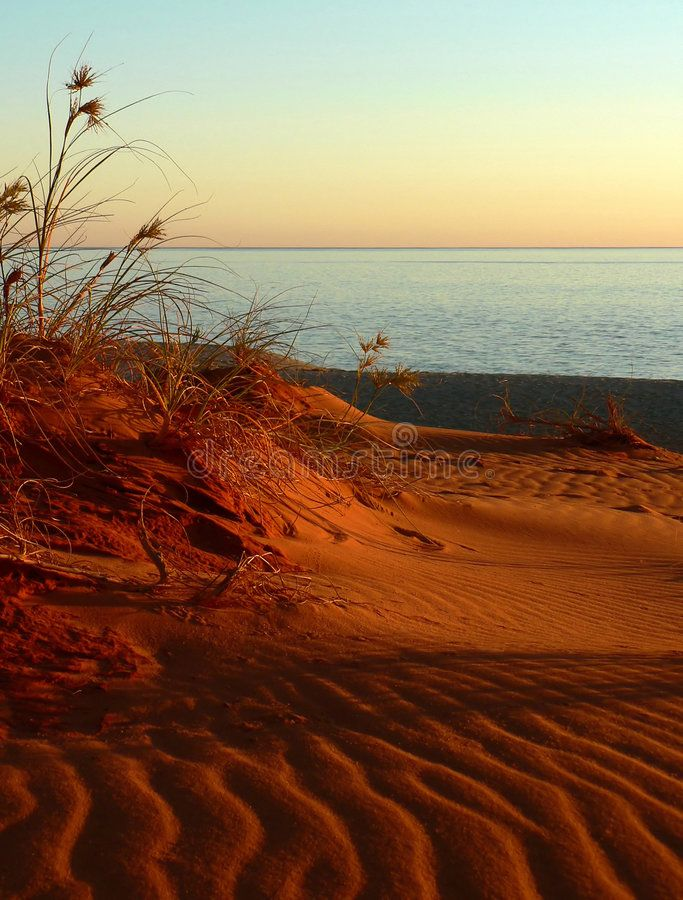
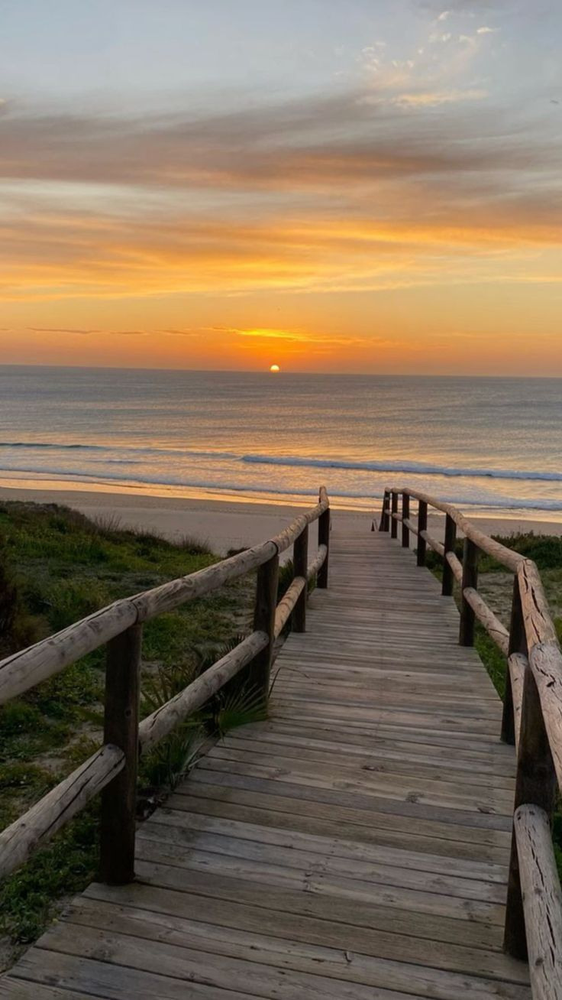

My recent trip to Fire Island was an unforgettable adventure filled with stunning natural beauty and peaceful moments. The pristine beaches, charming villages, and rich history of this unique barrier island made it the perfect getaway. From swimming in the Atlantic Ocean to exploring the scenic trails and lighthouse, every moment was memorable. I discovered why Fire Island is such a treasured destination for nature lovers and adventure seekers alike.


Are you ready to experience the natural beauty and charm of Fire Island for yourself? Plan your National Park adventure today and create memories that will last a lifetime. Whether you're looking for relaxation or exploration, Fire Island has something for everyone.
Visit the Fire Island National Seashore